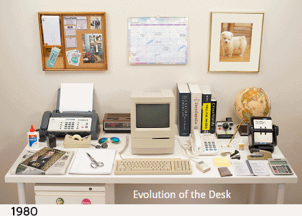

分享一个好玩的博客,主要分享科学上网、随机分享一些有用的账号
传送：http://51.ruyo.net/
快快收藏了吧~
admin 的文章
一张gif完美诠释pc+app演变史
1981至2014年电脑、App发展过程:
在carina上使用Docker搭建免费的ShadowSocks
科学上网之 - 在carina上使用Docker搭建免费的ShadowSocks
一些实用工具
两个有趣的东东
iOS block定义
fucking blocks
使用pelican在Github pages上搭建博客遇到的坑
使用pelican在Github pages上搭建博客遇到的坑
iOS mac工具集
记录一下自己mac上安装的，并且每天都在用的软件
1，Evernote
大名鼎鼎的印象笔记，功能强大；
2，SourceTree
非常好用的版本控制工具GUI软件，支持git ...
xcode自定义“删除一行”快捷键的python脚本
xcode自定义“删除一行”快捷键的python脚本
iOS 7新增三种后台测试
想实现这样一个功能： 某个视频类app中，一个上班族用户正在追某个感兴趣的视频，TA想每天下班回家后，TA追的那些个视频，在他上班期间已经下载完成了，TA回到家后不用下载了，直接可以看了。
实现想法：
1 ...
iOS开发-这几天遇到的问题
这几天遇到的几个比较常见的问题及解决方法（记录一下）
1，ios
: ImageIO: CGImageReadCreateDataWithMappedFile 'open' failed 程序没有错误，逻辑也没有问题 ...